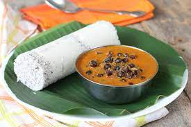

The Magical City
Of
Kerela
Trivandrum

Thiruvananthapuram, also spelled Tiruvanantapuram, formerly Trivandrum, city, capital of Kerala state, southwestern India.
It is situated along the Arabian Sea with isolated hills on a coastal plain.
Puttu with Rich Kadhala Curry
Dosa with Kerala Sambar

Varutha Kozhi